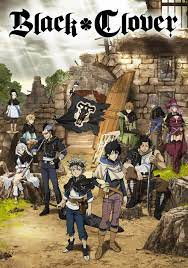

Some popular Anime-series are
-
Demon Slayer: Kimetsu no Yaiba

creator:Koyoharu Gotouge
The story follows a young boy named Tanjiro Kamado who becomes a demon slayer after his family is brutally attacked and his younger sister, Nezuko, is turned into a demon.Tanjiro and Nezuko embark on a quest to find a way to turn her back into a human and to avenge their family. Along the way, they meet other demon slayers who join them on their journey, and they must fight powerful demons while also learning more about their own abilities and the history of the demon slayers.
The series is known for its intense action scenes, emotional storytelling, and well-developed characters. It has gained a large following around the world and has been adapted into various forms of media, including an anime series, a movie, and a video game.
To watch Demon Slayer follow the links
More about Demon Slayer click here
-
Jujutsu Kaisen

creator:Gege Akutami
The story follows a high school student named Yuji Itadori, who becomes a Jujutsu Sorcerer after ingesting a cursed object to save his friends. Jujutsu Sorcerers are people who use cursed energy to exorcise cursed spirits that are a threat to humanity.
As Yuji trains to become a Jujutsu Sorcerer, he joins forces with his classmates, Megumi Fushiguro and Nobara Kugisaki, and their teacher, Satoru Gojo, to combat the powerful curses and their human and supernatural allies. The series explores themes of death, grief, trauma, and the nature of curses, while also featuring intense action and humor.
To watch Jujutsu Kaisen follow the links
More about jujutsu-kaisen click here
-
Naruto

creator:Masashi Kishimoto
Naruto" is a popular Japanese anime and manga seriesThe story follows a young ninja named Naruto Uzumaki as he strives to become the strongest ninja in his village and earn the respect of his peers. Along the way, he faces many challenges and enemies, including a dangerous organization called Akatsuki. Through his determination and the help of his friends, Naruto overcomes these obstacles and becomes a powerful and respected ninja.
The anime also explores themes of friendship, sacrifice, and the power of determination.Naruto and its Continuation Naruto Shippuden is a long runing series that have 700+ episodes
To watch Naruto follow the links
More about Naruto click here
-
Attack on Titan

creator:Hajime Isayama
When man-eating Titans first appeared 100 years ago, humans found safety behind massive walls that stopped the giants in their tracks. But the safety they have had for so long is threatened when a colossal Titan smashes through the barriers, causing a flood of the giants into what had been the humans' safe zone. During the carnage that follows, soldier Eren Jaeger sees one of the creatures devour his mother, which leads him to vow that he will kill every Titan. He enlists some friends who survived to help him, and that group is humanity's last hope for avoiding extinction at the hands of the monsters
"Attack on Titan" tackles several complex and thought-provoking themes, including survival, freedom, power, identity, and morality. The series forces its characters to confront harsh realities and grapple with challenging questions, such as what it means to be free, how power can corrupt, and what the true cost of survival may be. Through its exploration of these themes, "Attack on Titan" presents a nuanced and thought-provoking story that resonates with audiences around the world.
To watch Attack_on_Titan follow the links
More about Attack_on_Titan click here
-
Black Clover
creator:Yūki Tabata
The story takes place in a world where magic is everything and follows Asta, a young orphan boy with no magical abilities in a society where magic is highly valued. Despite this, Asta dreams of becoming the Wizard King, the most powerful mage in the kingdom. Along with his fellow orphan and rival, Yuno, Asta sets out on a journey to hone his skills, gain magical power, and protect his kingdom from various threats.
The series is known for its action-packed battles, complex characters, and themes of perseverance, friendship, and determination.
To watch Black Clover follow the links
More about black clover click here
-
One Piece
creator:Eiichiro Oda
The story follows a young pirate named Monkey D. Luffy, who sets out on a quest to find the legendary treasure known as One Piece, and become the Pirate King, the ultimate goal of all pirates. Along the way, Luffy and his crew, the Straw Hat Pirates, encounter a variety of colorful characters, including other pirates, marines, and powerful adversaries, as they navigate the treacherous waters of the Grand Line and battle for their dreams and the fate of the world.
One Piece is known for its compelling characters, intricate world-building, and exciting action sequences. The series has also explored themes of friendship, loyalty, and chasing one's dreams,
To watch One Piece follow the links
More about one piece click here
-
Dragon Ball

creator:Akira Toriyama
he story follows the adventures of Goku, a young boy with a monkey tail who possesses incredible strength and learns various martial arts techniques. Along the way, Goku meets friends and foes, collects mystical objects called Dragon Balls, and battles against powerful enemies to save the world from destruction.
The series blends action, comedy, and adventure and has become a beloved franchise with a dedicated fan base.
To watch Dragon Ball follow the links
More about black clover click here
-
Death Note

creator:Tsugumi Ohba
The story follows a high school student named Light Yagami who discovers a mysterious notebook, known as the Death Note, that has the power to kill anyone whose name is written in it. Light decides to use the Death Note to rid the world of criminals and become a self-proclaimed "god" of a new world order. However, his actions soon attract the attention of a brilliant detective named L, who is determined to catch the elusive killer known only as "Kira."
The series explores themes of morality, justice, and the consequences of playing god, as Light and L engage in a high-stakes game of cat-and-mouse, with the fate of the world hanging in the balance.
To watch Death Note follow the links
More about black clover click here
-
Hunter × Hunter

creator:Yoshihiro Togashi
The story follows a young boy named Gon Freecss who discovers that his father, who he believed was dead, is actually a legendary Hunter - a licensed profession for individuals who specialize in locating rare treasures, exploring uncharted territories, and hunting down dangerous criminals. Gon decides to follow in his father's footsteps and becomes a Hunter himself, embarking on a dangerous and thrilling adventure alongside a diverse group of fellow Hunters. Along the way, they encounter powerful adversaries, uncover dark conspiracies, and unravel the mysteries of the world they inhabit.
The series has been praised for its complex and well-developed characters, intricate world-building, and engaging storytelling.
To watch Hunter × Hunter follow the links
More about Hunter × Hunter click here
-
Haikyuu!!
creator:Haruichi Furudate
Haikyuu!! is a Japanese sports anime and manga series that follows the story of Shoyo Hinata, a high school student who joins his school's volleyball team and strives to become the best player he can be. Along with his team, he faces various challenges and obstacles both on and off the court, all while developing their skills and learning important life lessons about teamwork, dedication, and perseverance.
To watch Haikyuu!! follow the links
More about black clover click here